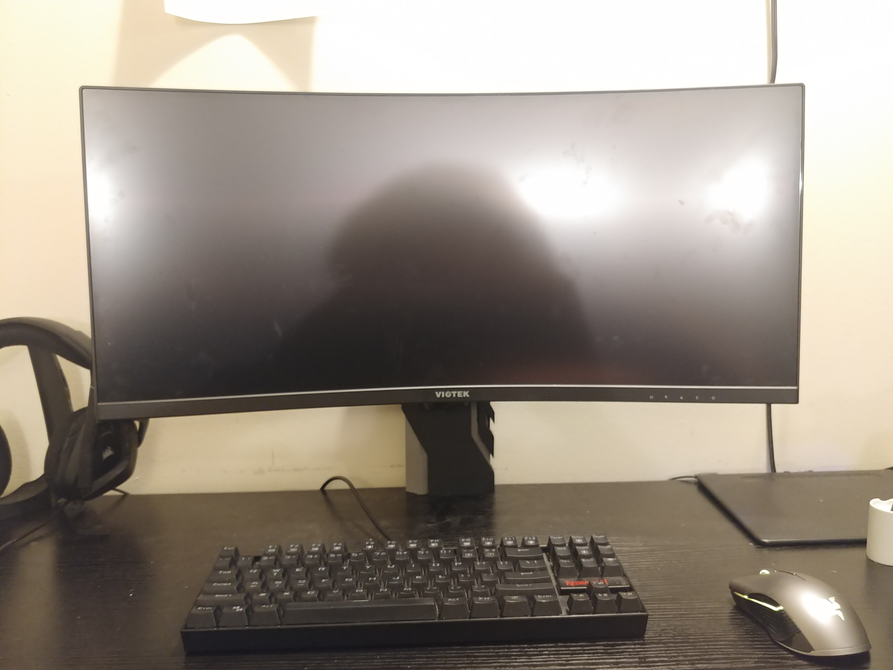
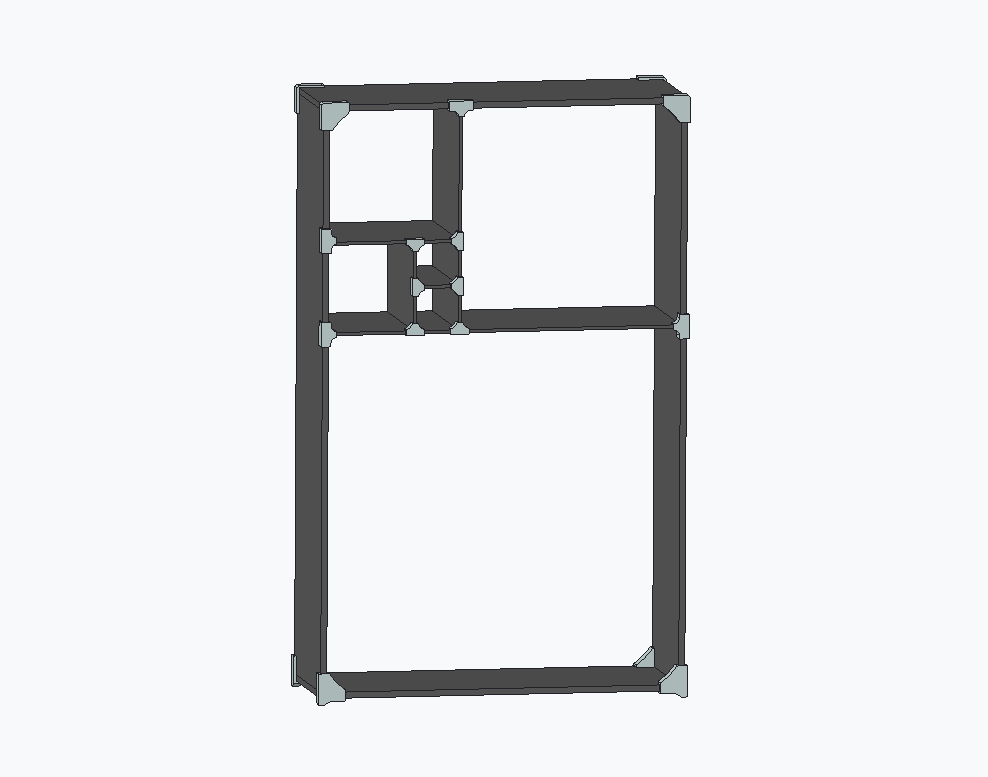
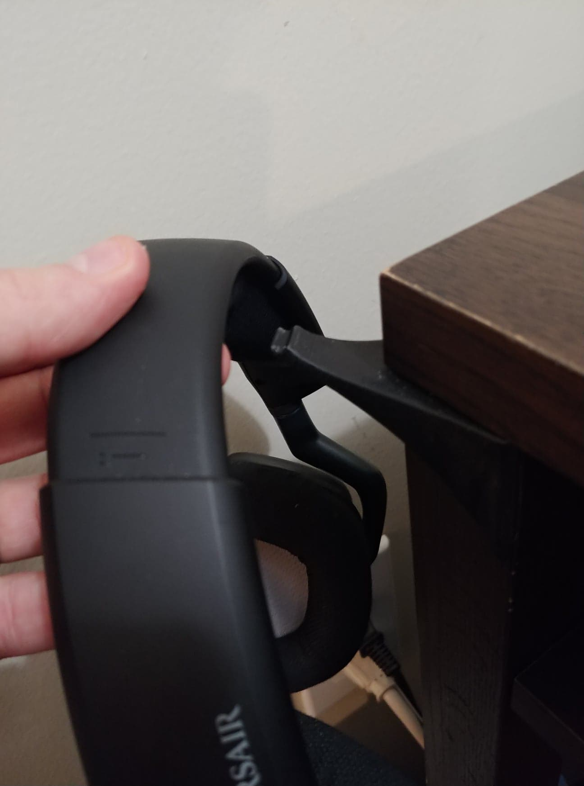
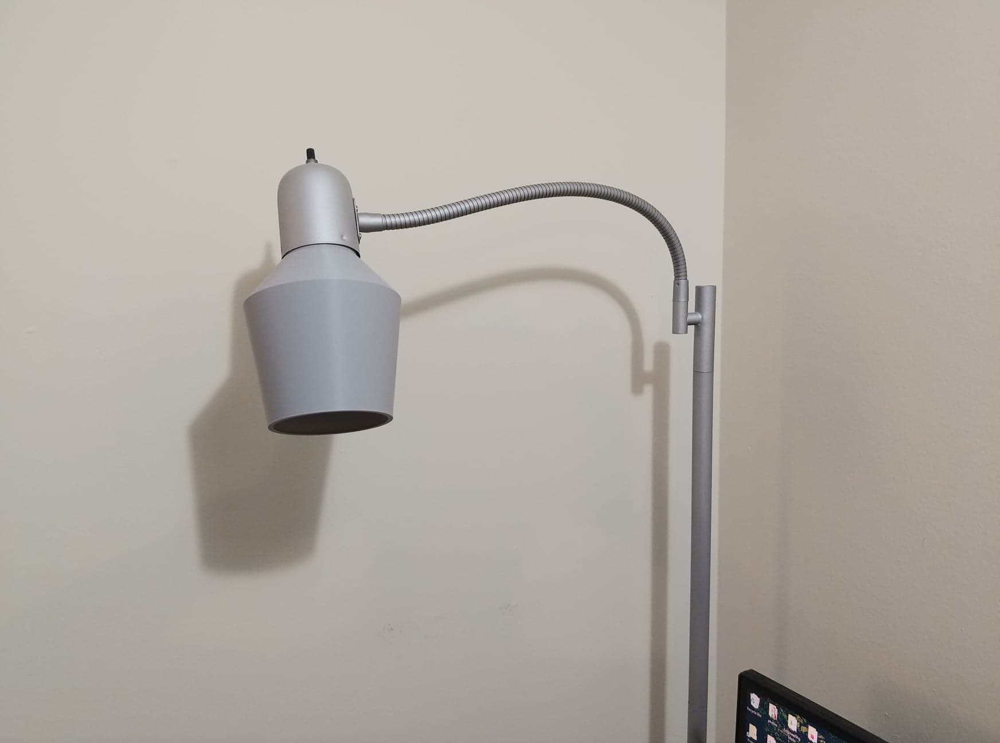
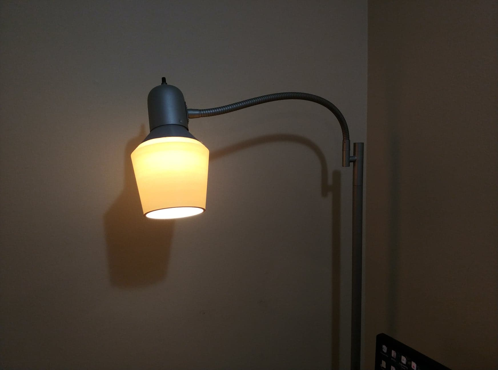
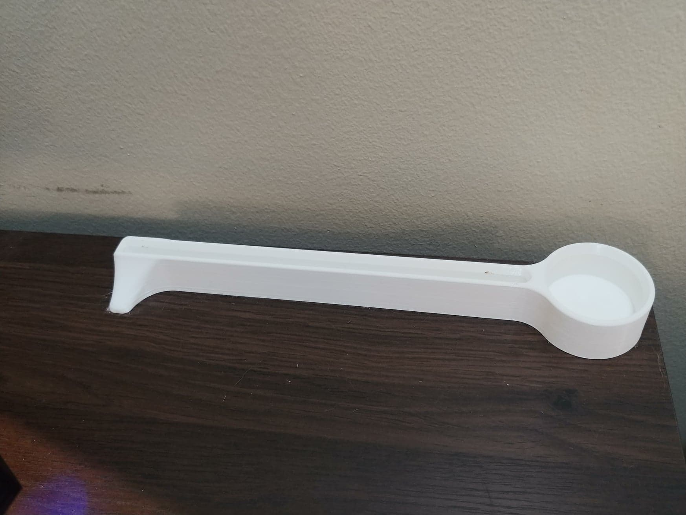

This page is still under construction!
I have included some images, however I haven't had enough time to write about them.
Cyber monitor stand



Fibonacci shelf


Headphone stand



3D printed lampshade



Tablet and stylus stand


Hidden laptop mounting